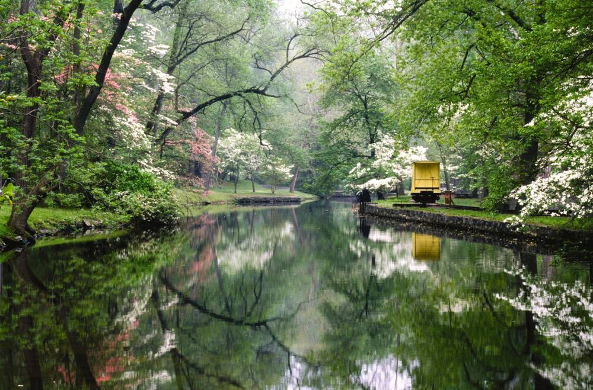

Delaware ist ein Bundesstaat an der Ostküste der Vereinigten Staaten von Amerika, der den Nordosten der Delmarva-Halbinsel einnimmt.
Der Name des flächenmäßig zweitkleinsten Bundesstaates leitet sich von der angrenzenden Delaware Bay ab, die wiederum nach Thomas West,
3. Baron De La Warr, einem englischen Adligen und zweitem Gouverneur der Kolonie Virginia aus der Kolonialzeit, benannt wurde.
Der Bundesstaat trägt den offiziellen Beinamen The First State (Erster Staat), da Delaware 1787 als erster Staat der Dreizehn Kolonien
die Verfassung der USA ratifizierte.
Delaware spielt heutzutage trotz der geringen Größe und Einwohnerzahl eine wichtige Rolle als Sitz vieler Firmen und Konzerne, was in der besonders
günstigen Versteuerung von Holdinggesellschaften begründet liegt. Dies sind zum Teil reine Briefkastenadressen. Über die Hälfte aller an der New Yorker
Börse notierten Unternehmen und über drei Fünftel der Fortune-500-Unternehmen sind gesetzlich im Staat Delaware eingetragen.
Die Hauptstadt Delawares ist Dover, die größte Stadt ist Wilmington. In Delaware gibt es nur drei Countys, so wenige wie in keinem anderen US-Bundesstaat.
Quellen- und Lizenzhinweis:
Dieser Text basiert auf dem Wikipedia-Artikel
Delaware
(geänderte Fassung) und steht unter der Lizenz
Creative Commons Attribution-ShareAlike 4.0 International (CC BY-SA 4.0).
Das Bild ist von
usatipps.de